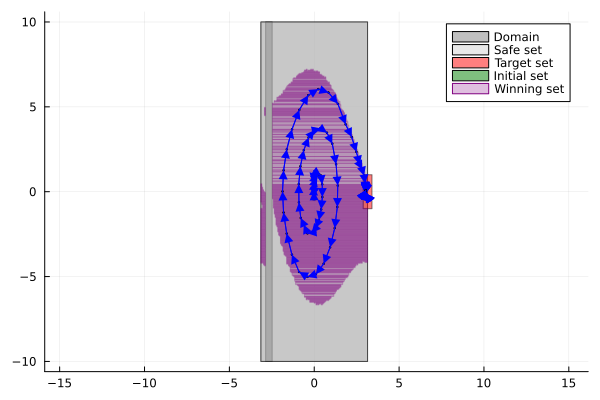
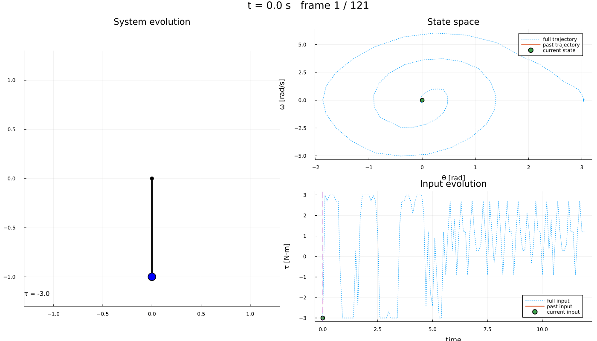

Getting started: swinging up a pendulum and holding it there
| System | 2-D continuous, nonlinear, with a periodic coordinate |
| Specification | reach-and-stay |
| Solver | uniform grid abstraction |
This page is one complete run of Dionysos, from a differential equation to a controller with a certificate and a simulation of the closed loop. Every other example is the same five steps with a different plant, so it is worth reading once in full.
The plant is a pendulum hanging from a pivot, driven by a torque $u$ at that pivot. Its state is the angle $x_1$ (zero hanging down) and the angular velocity $x_2$:
\[\dot{x}_1 = x_2, \qquad \dot{x}_2 = -\frac{g}{l}\sin(x_1) + u .\]
The torque is too weak to lift the pendulum directly, so the controller has to swing it: rock back and forth to pump in energy, then catch it upright at $x_1 = \pi$ — and keep it there, which is the harder half. Balancing at $\pi$ is an unstable equilibrium: left alone the pendulum falls straight back down, so staying up is an active, permanent task rather than something that happens once. Nothing below tells the controller to swing. We state where it starts, where it must end up and remain, and how finely to discretise; the rest is synthesis.
using StaticArrays, JuMP, Plots
import LazySets
using Symbolics, MathOptSymbolicAD
using Dionysos
const DI = Dionysos
const UT = DI.Utils
const ST = DI.System
const MP = DI.Mapping
const SY = DI.Symbolic;Step 1 — describe the system
A Dionysos model is a JuMP model with Dionysos.Optimizer. State and input are ordinary JuMP variables, and their bounds are the constraint sets: X and U of the control problem, not hints or initial guesses. Everything outside them is off-limits to the controller, and to the abstraction.
l, g = 1.0, 9.81
model = Model(Dionysos.Optimizer);The angle is periodic: $-\pi$ and $\pi$ are the same physical configuration. Declaring the state space as one full turn, and telling the solver that coordinate wraps (below), is both the honest model and a third fewer cells than pretending the angle runs from $-\pi$ to $2\pi$.
@variable(model, -π <= x1 <= π)
@variable(model, -10.0 <= x2 <= 10.0)
@variable(model, -3.0 <= u <= 3.0);The dynamics are written with ∂ for continuous time (Δ would make it a discrete-time model — mixing the two is an error). Which variables are states and which are inputs is inferred: a variable carrying a ∂ is a state, one that only appears on a right-hand side is an input.
@constraint(model, ∂(x1) == x2)
@constraint(model, ∂(x2) == -(g / l) * sin(x1) + u);Step 2 — state the specification
start is a set, not a point: begin near the bottom with a little velocity.
@constraint(model, start(x1) in MOI.Interval(-0.09, 0.09))
@constraint(model, start(x2) in MOI.Interval(-0.5, 0.5));The goal is a region of the state space — near the top, having nearly stopped. The upright position sits exactly on the seam of the period, so this box straddles it. That is fine: the periodic mapping splits it into the two pieces at either end of the turn.
upright = LazySets.Hyperrectangle(;
low = SVector(π - 15π / 180, -1.0),
high = SVector(π + 15π / 180, 1.0),
);EventuallyAlways is ◇□ — reach the region and then never leave it. That is a stronger demand than Final, which would be satisfied by a trajectory that touches the target once and falls over immediately afterwards. Here the controller must find states from which it can hold the pendulum up forever, and steer into those.
◇□ read literally still allows a run to enter the target, fall out, and be caught again, so long as it settles eventually. stay_on_first_entry rules that out: the pendulum must hold from the moment it is first caught. Asking for it changes how the problem is solved — the invariant core of the target is computed once and then reached, rather than being re-derived as the winning region grows — which here costs a fraction of a percent of the winning set and is several times faster.
@constraint(model, [x1, x2] in EventuallyAlways(upright; stay_on_first_entry = true));One more thing makes the task interesting: a band of angles the pendulum is not allowed to pass through. Written over a single coordinate, ∉ is a full-height wall — the box spans the remaining variable's own bounds, so it forbids that angle at every velocity. (The left-hand side has to be a vector, even with one entry, because the set is a vector set.)
@constraint(model, [x1] ∉ MOI.HyperRectangle([-π + 16π / 180], [-π + 38π / 180]));∉ describes the world, not the requirement: the region is carved out of the state space, so those cells are never built. The alternative, x in Always(S), keeps the cells and asks the controller to avoid them — use that when staying inside S is the goal.
Beyond EventuallyAlways, Final and Always, the front-end also expresses co-safe LTL formulas over named regions — see Integrator: co-safe LTL and the manual.
Step 3 — choose the abstraction
This is the step with no counterpart in classical control, and the one that decides whether synthesis succeeds. Dionysos replaces the infinite state space by a finite grid of cells, and builds a finite automaton whose transitions over-approximate what the real system can do. The jacobian_bound is what makes that over-approximation valid: it bounds how fast neighbouring trajectories can separate, and therefore how far a cell can spread in one time_step.
SMatrix fills column by column, so this is $\begin{smallmatrix} 0 & 1 \\ g/l & 0 \end{smallmatrix}$ — it must dominate $\partial f/\partial x$ entry by entry, and the only non-trivial entry is $|-(g/l)\cos x_1| \le g/l$. Writing the two off-diagonal terms the other way round type-checks, runs, and quietly under-bounds how fast the velocity can spread; the abstraction then stops covering the real dynamics and the "guarantee" is worthless.
set_attribute(model, "jacobian_bound", u -> SMatrix{2, 2}(0.0, g / l, 1.0, 0.0))
set_attribute(model, "time_step", 0.1);A periodic coordinate constrains its grid: the period must be a whole number of cells, and the origin must sit half a cell inside it, so that the two ends of the turn line up exactly. A 3° step gives 120 cells per revolution.
h = SVector(3π / 180, 0.05)
set_attribute(model, "state_grid", MP.GridFree(SVector(-π + h[1] / 2, 0.0), h))
set_attribute(model, "input_grid", MP.GridFree(SVector(0.0), SVector(0.3)));Declaring the angle periodic makes the abstraction identify the two ends of the turn, so a swing through $\pi$ costs nothing extra. print_level = 0 keeps the solver quiet; raise it to watch the abstraction being built.
set_attribute(model, "use_periodic_mapping", true)
set_attribute(model, "periodic_dims", SVector(1))
set_attribute(model, "periodic_periods", SVector(2π))
set_attribute(model, "periodic_start", SVector(-π))
set_attribute(model, "print_level", 0);One more choice, and on this problem it is worth a factor of fifty. The automaton backing the abstraction can be stored several ways, which trade memory against the speed of pre — the predecessor query. Reach-and-stay synthesis is a fixed point over pre, so it makes that query millions of times, and the default compact backend turns out to be the wrong trade here: with it this page takes half an hour, with dense indices it takes half a minute.
set_attribute(model, "automaton_constructor", (n, m) -> SY.FastIndexedAutomatonList(n, m));The grid step is the one number to reach for when a problem does not solve. Finer cells mean a less conservative over-approximation and a better chance of success — at a cost that grows exponentially with the state dimension. That trade-off is the central difficulty of abstraction-based control, and the reason for the lazy solvers described in the manual.
Step 4 — solve
No solver was named. A model without modes goes to the uniform grid abstraction; one with @modes goes to the hybrid abstraction. Either can be forced explicitly.
optimize!(model);termination_status(model)OPTIMAL::TerminationStatusCode = 1Note what a failure would say here: LOCALLY_INFEASIBLE, never INFEASIBLE. The abstraction is sound — a controller synthesized on it is guaranteed correct on the real pendulum — but not complete: if it finds nothing, that is a statement about this discretisation, and a finer grid may still succeed.
concrete_problem = get_attribute(model, "concrete_problem");
concrete_controller = get_attribute(model, "concrete_controller");
abstract_system = get_attribute(model, "abstract_system");
winning_set = get_attribute(model, "winning_set");The controller does not come alone. For a reach-and-stay task the certificate is the winning set: the cells from which the specification can be enforced. Every state in it can be driven to the upright region and held there indefinitely, and no state outside it can. A controller that works only somewhere is useless unless you know where — that set is the "where", and it is what makes the result a guarantee rather than a demonstration.
Step 5 — run the closed loop
simulate normally takes its stopping criterion from the specification, which for reach-and-stay means "stop on first entering the target". That would cut the run at the instant the pendulum arrives, hiding the half of the task we care about, so we override it and run a fixed horizon: the swing-up takes about sixty steps, and the rest is balancing.
trajectory =
Dionysos.simulate(model, SVector(0.0, 0.0); nsteps = 120, stopping = _ -> false);In the phase plane: the state space with the forbidden band cut out of it, the initial and target sets, the winning set, and the closed-loop trajectory. The trajectory has to spiral outwards to build up energy before it can be caught at the top — without ever entering the wall — and the run ends on the last step it is still balanced there.
fig = plot(; aspect_ratio = :equal)
plot!(concrete_problem)
plot!(
(winning_set, SY.get_state_mapping(abstract_system));
color = :purple,
opacity = 0.25,
linecolor = :purple,
label = "Winning set",
)
plot!(trajectory; ms = 1.0, color = :blue)
The same run as an animation — the pendulum itself on the left, the phase portrait and the applied torque on the right. The swinging is easiest to see here: the trajectory spirals outwards, gaining energy, is caught at the top, and then the torque keeps working in small corrections to hold it there.
include(
joinpath(
dirname(dirname(pathof(Dionysos))),
"problems",
"Pendulum",
"simple_pendulum.jl",
),
);
anim = Dionysos.animate_trajectory_dashboard(
SimplePendulum.system_plot!(),
trajectory;
xdims = (1, 2),
udims = (1,),
Δt = 0.1,
frame_step = 2,
xlabel_state = "θ [rad]",
ylabel_state = "ω [rad/s]",
ylabel_input = "τ [N·m]",
);fps is playback speed, not render cost — pick it from the frame count so the animation runs for roughly ten seconds rather than flashing past.
gif(anim; fps = 6)
Where to go next
- Path planning — obstacles, and a 3-D state space.
- Thermostat — a hybrid model: several modes with guarded switching.
- Overview — the specifications and solvers available, and how they fit together.
This page was generated using Literate.jl.